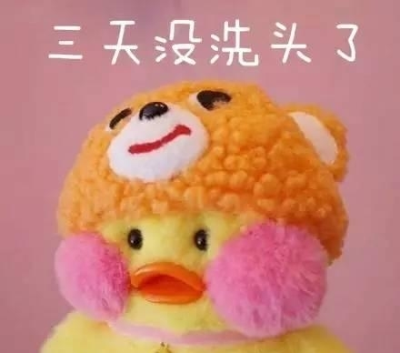

玻尿酸鸭


这个叫“玻尿酸鸭”的新网红，可能是你的下一个头像
（摘自百度某个网页）
最近在网上很火的cafemimi玻尿酸鸭原来是有名字的!小编一直以为是一只很普通的小黄鸭，不知怎么的，突然就想起了鸡年 大吉的配图，难道那只小黄鸡是这个小黄鸭的女朋友?
lalafanfan cafa mimi小黄鸭。俗称玻尿酸小黄鸭，这款鸭子是ins韩国人做的。出处是ins：cafe_mimi 推主手作哦， ins上火到一塌糊涂的小黄鸭，让人一看到就忍不住亲上一口!乍一看，你有点丑，再多看两眼。瞬间get到萌点嗯，我 是一枚得了腮腺炎的扁嘴小黄鸭，蠢萌蠢萌的，可爱到炸哦~
cafemimi玻尿酸鸭是最近最火的表情包，很多小伙伴都很喜欢，这个小鸭子相当的可爱，因此不少小伙伴想知道这个究竟为 什么这么火，就是不告诉你~~~